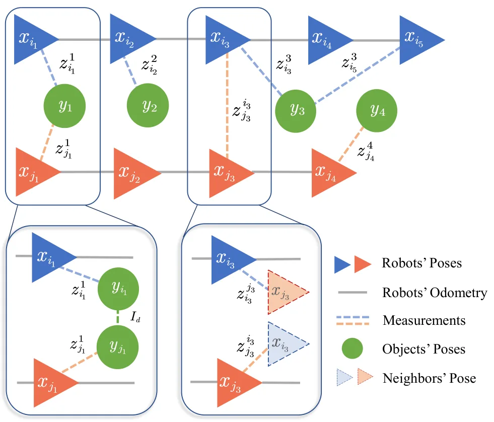

面向对象级多机器人 SLAM 的去中心化位姿图黎曼优化Decentralized Pose Graph Riemannian Optimization for Object-based Multi-Robot SLAM
与多机器人 SLAM、对象级地图和分布式因子图优化高度相关；贡献集中在通信受限场景下的后端优化效率和几何一致性，需继续查看真实实验规模与代码可复现性。
一句话工作总结
用 consensus 与近似 Newton 的去中心化黎曼优化，处理对象级多机器人 SLAM 中机器人轨迹与物体位姿的强耦合估计。
摘要
对象级多机器人 SLAM 后端需要同时估计多台机器人轨迹和跨机器人观测到的持久物体位姿，耦合程度高；而现实通信拓扑又可能稀疏、间歇或随时间变化。本文提出完全去中心化的对象级多机器人 PGO 黎曼优化框架，通过 consensus 机制解耦联合估计问题，使通信拓扑不必严格等同于物理交互拓扑。作者进一步设计利用局部二阶信息的分布式近似 Newton 方案，直接在 SE(d) 流形上优化以保持几何一致性，并给出收敛到黎曼一阶驻点及局部条件数分析。
Pose graph optimization (PGO) is a key back-end component for state estimation in networked multi-robot simultaneous localization and mapping (SLAM). In object-based multi-robot SLAM, the problem becomes more tightly coupled because robots must jointly estimate both their trajectories and the poses of persistent objects observed by multiple agents. Existing decentralized solutions often assume that the communication graph closely matches the physical interaction topology, which is restrictive in realistic deployments where communication is sparse, intermittent, or time-varying. This paper presents a fully decentralized Riemannian optimization framework for object-based multi-robot PGO that decouples the coupled estimation problem via a consensus mechanism, enabling flexible communication topologies. To improve convergence under limited communication budgets, we further develop a distributed approximate-Newton scheme that exploits local second-order information while operating directly on the SE(d) manifold to preserve geometric consistency, and we establish the convergence to Riemannian first-order stationary points and provide a local condition-number analysis explaining the benefit of approximate second-order information over first-order Riemannian descent. The resulting method reduces iteration count and communication overhead without sacrificing estimation accuracy. Extensive evaluations on public benchmarks, large-scale simulations, and real-world multi-robot experiments demonstrate improved accuracy, runtime efficiency, scalability across network topologies, and robustness to communication failures.
中文解读摘录
- 英文题名：Pocket-SLAM: Rendering-Area-Aware Pruning for Memory-Efficient 3DGS-SLAM
- 作者：Leshu Li, Jie Peng, Yang Zhao
- 类别/来源：cs.CV；comment: 2026 IEEE International Conference on Robotics and Automation (ICRA)；采集 score=17；阅读优先级=9.3/10。
- 一句话总结：用“对有效渲染区域的贡献”而不是单点 opacity/gradient 启发式来剪枝高斯，在保持定位/建图精度的同时显著降低 3DGS-SLAM 运行内存。
- 为什么值得看：这是今天最贴近 SLAM 主线的工作，直接面向大尺度/自动驾驶场景中 3DGS-SLAM 高斯点持续累积的问题；摘要报告 EuRoC/KITTI 上超过 60% 内存降低和 2 倍以上 FPS 提升，且给出了开源仓库地址。后续应复核其 pruning 触发策略、实时开销、对回环/长期地图维护的影响，以及和现有 keyframe/visibility 管理的关系。
- 标签：3DGS-SLAM、内存剪枝、实时建图、自动驾驶
- 链接：abs / PDF
图表/页面预览

{kind=link}
